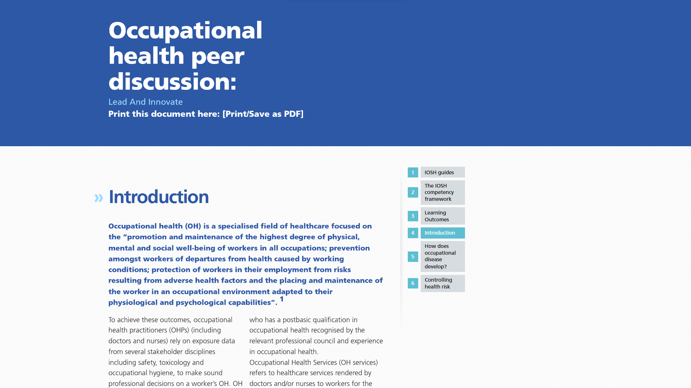
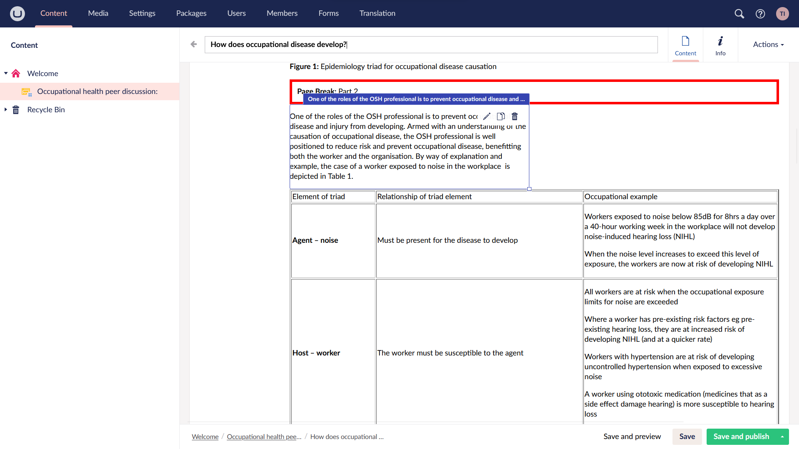
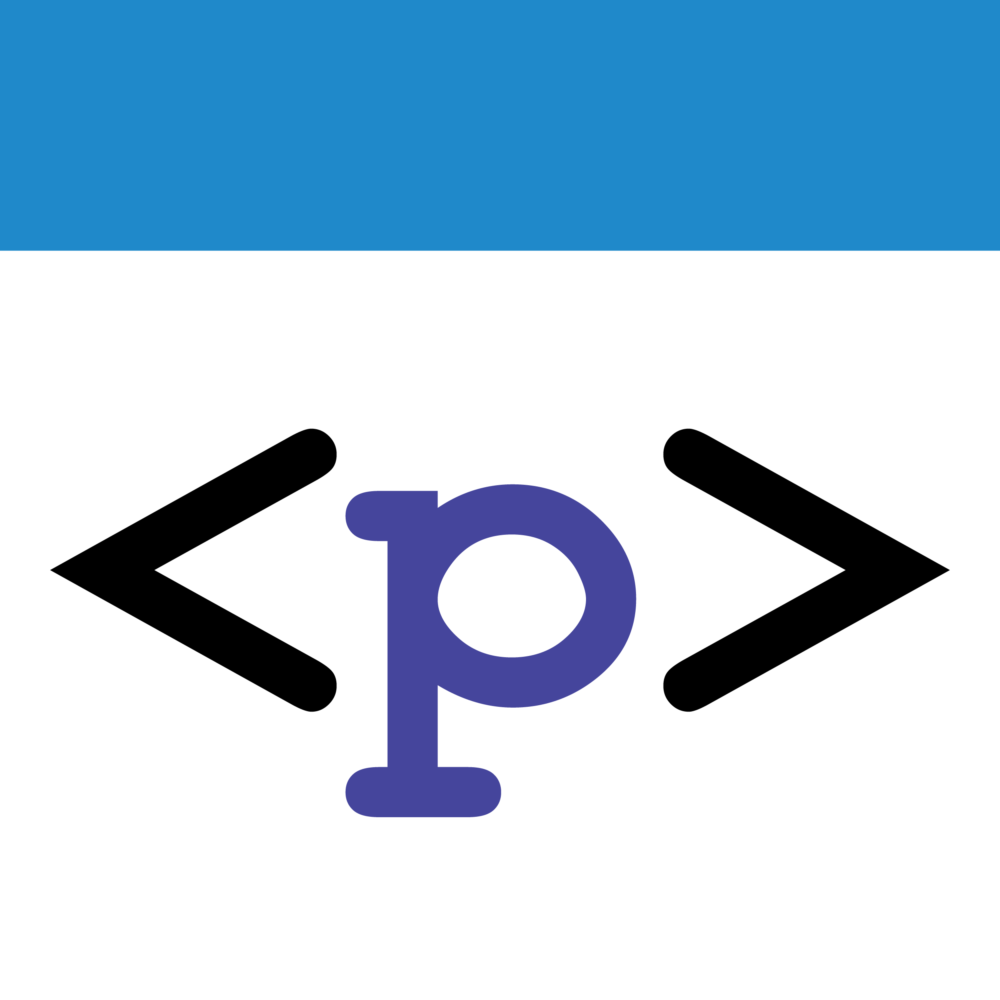

Specialising in .NET and Umbraco with a lense prioritising building modern and responsive websites. I’m passionate about creating engaging user interfaces that are fast, accessible, and easy to use. I have worked with various technologies and frameworks, such as JavaScript, jQuery, ASP.NET Core, Bootstrap, and C#. I’m always eager to learn new skills and explore new challenges in web development.
Institute of Occupational Health and Safety (IOSH) |
Apr 2021 – Present |
Position: Frontend developer
Highlights:
Implemented urgent rebranding in line with changes to corporate branding within a short timeframe.
Encouraged auditing for improvements to the website: critical security exploits updates, strongly typed code to speed up website and better browser support, maintenance plan, web push, React and monthly meetings with the wider team giving updates and answering questions.
Built new interactive templates to replace the website's PDF resources and created new infographics to generate a level system for PDF resources (demo available on request).
May 2018 – 2021
Position: Junior Frontend Developer
Highlights:
Translated design teams' UX wireframes and mockups into interactive features using HMTL, CSS and JavaScript.
Designed and developed GUI for applications and modules using JavaScript.
Increased email sign-ups by over 10% by creating a new UI for a website landing page.
Applied international web standards (W3C) to promote consistency in the design code.
Conducted Browser and Device testing and debugging.
Apr 2017 – Apr 2018
Position: Junior User Experience Designer
Highlights:
Applied UX principles to create user-centric experiences in shaping and designing a website for a commercial insurance client.
Supported User Researchers by developing wireframes and clickable prototypes for customer testing.
Worked with cross-functional teams across technology and business to deliver the new website proposition

Background: for this project, I was tasked with creating web templates for my company as we wanted to shift away from PDF's and into something more web based and interactive. With the help of the web team and UX/UI designers I was given wireframes followed by feedback to code up the entire structure from scratch using C#, HTML, CSS3, JavaScript and jQuery alongside tools built into Umbraco backoffice.

This web application was also designed to give full freedom and flexibility to the content editors to design and curate content to suit their needs without having to have customisations programmed in case-by-case. This was done using inbuilt tools provided by Umbraco (Block Grid editor) where I individually programmed each component for content editing based on how our PDF's are structred

Okayy: this is a collaborative open source community website I'm currently working on. Which is made on a wide array of coding languages primarily React
|
Frontend |
Backend |
Misc |
|
CSHTML |
SQL |
TypeScript |
|
HTML5 |
ASP.NET |
Mobile first |
|
CSS3 |
.NET6 |
AGILE |
|
JavaScript |
Stencil.js |
Git |
|
jQuery |
REST API |
Gulp |
|
React |
JEST |
|
|
Angular |
Umbraco |
|
|
SCSS |
MVC |
|
|
LESS |
Azure |
|
|
Tailwind CSS |
||
|
Bootstrap |